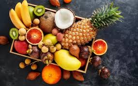
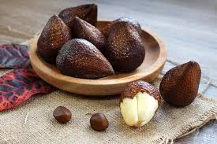
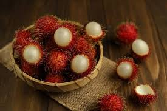
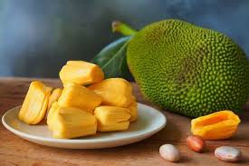

MANFAAT BUAH BUAHAN TROPIS

Dilansir dari Biology LibreTexts, buah tropis adalah jenis buah-buahan yang berasal dari daerah tropis yang memiliki iklim panas dan tropis. Buah tropis tumbuh di wilayah khatulistiwa hampir sepanjang tahun, namun tidak dapat tumbuh baik pada suhu yang dingin.
Buah-buahan tropis biasanya memiliki warna-warni yang mencolok untuk mengundang hewan penyerbuknya. Tidak hanya warna yang mencolok, buah tropis juga memiliki aroma yang mencolok dan rasa yang unik.
Buah tropis juga cenderung memiliki rasa yang lebih manis. Dilansir dari Botanical Online, hal tersebut dikarenakan iklim tropis menguapkan lebih banyak air dalam tumbuhan dan membuat konsentrasi gula di dalamnya lebih tinggi.
Penguapan yang lebih tinggi tidak hanya membuat buah tropis lebih manis, melainkan juga membuatnya tinggi akan vitamin dan mineral. Adapun, sebagian buah tropis (seperti nanas dan papaya) mengandung enzin pendegradasi. Sehingga, kerap digunakan untuk melembutkan daging.
SALAK
RAMBUTAN
NANGKA
SALAK

Manfaat buah salak antara lain:
1. menambah energi
Buah salak, termasuk salak pondoh, mengandung karbohidrat yang dapat menambah energi. Tubuh akan mencerna karbohidrat dan mengubahnya menjadi glukosa yang akan diserap oleh jaringan tubuh sebagai sumber energi untuk melakukan berbagai aktivitas.
2. mengontrol berat badan
Salak pondoh juga bisa membantu Anda mengontrol berat badan. Berkat kandungan serat di dalamnya, mengonsumsi buah ini dapat membuat Anda merasa kenyang lebih lama sehingga Anda akan makan dengan porsi yang sedikit. Dengan begitu, berat badan pun akan terjaga.
Namun, agar hasilnya lebih optimal, konsumsi salak pondoh sebaiknya disertai dengan olahraga secara rutin. Beberapa jenis olahraga yang bisa dilakukan untuk membantu mengontrol berat badan di antaranya adalah lompat tali, bersepeda, berenang, HIIT, maupun angkat beban.
3. meningkatkan daya ingat
Manfaat salak pondoh dalam meningkatkan daya ingat berasal dari kandungan kalium, pektin, dan beta karoten di dalamnya. Ketiga kandungan tersebut mampu meningkatkan aliran darah ke otak.
Dengan begitu, fungsi otak akan lebih optimal, termasuk dalam mengingat sesuatu. Meski begitu, masih diperlukan penelitian lebih lanjut mengenai efektivitas buah salak, termasuk salak pondoh, dalam meningkatkan daya ingat.
kembali ke atas
RAMBUTAN

Manfaat buah rambutan antara lain:
1. sumber antioksidan
Rambutan dikenal sebagai salah satu buah yang kaya akan antioksidan. Dengan kandungan vitamin C, vitamin A, dan flavonoid, buah ini memberikan perlindungan maksimal terhadap radikal bebas yang dapat merusak sel-sel tubuh.
2. memperkuat sistem kekebalan tubuh
Dengan mengonsumsi buah rambutan secara teratur, Anda dapat memperkuat sistem kekebalan tubuh. Vitamin C yang tinggi dalam buah ini membantu meningkatkan produksi sel darah putih, menjadikan tubuh lebih tangguh melawan serangan penyakit dan infeksi.
3. menjaga kesehatan kulit
Vitamin C dan vitamin A dalam buah rambutan bukan hanya baik untuk kesehatan tubuh secara keseluruhan, tetapi juga memberikan manfaat luar biasa untuk kulit. Vitamin C membantu merangsang produksi kolagen, menjaga kulit tetap kencang dan muda, sementara vitamin A membantu mencegah penuaan dini.
kembali ke atas
NANGKA

Manfaat buah nangka antara lain:
1. membantu mengelola kadar gula darah
Buah nangka mengandung antioksidan yang dapat membantu Anda mengelola gula darah. Dalam beberapa penelitian, ekstrak nangka terbukti dapat menurunkan kadar gula darah.
2. menjaga kesehatan tulang
Manfaat buah nangka selanjutnya yaitu membantu tubuh dalam memperkuat dan menjaga kesehatan tulang. Nangka memiliki kandungan magnesium yang merupakan salah satu nutrisi penting dalam penguatan tulang. Selain itu beragam jenis vitamin yang ada pada nangka juga turut membantu dalam meningkatkan kualitas tulang Anda.
3. mempercepat penyembuhan luka
Nangka ternyata memiliki manfaat yang cukup baik bagi penyembuhan berbagai macam luka pada tubuh. Hal ini karena nangka kaya akan kandungan dari vitamin C. Kandungan vitamin C ini sangat membantu tubuh untuk meningkatkan kekebalan tubuh. Tidak hanya sampai disitiu, ternyata karena vitamin C inilah proses pembentukan kolagen dapat lebih cepat.
kembali ke atas